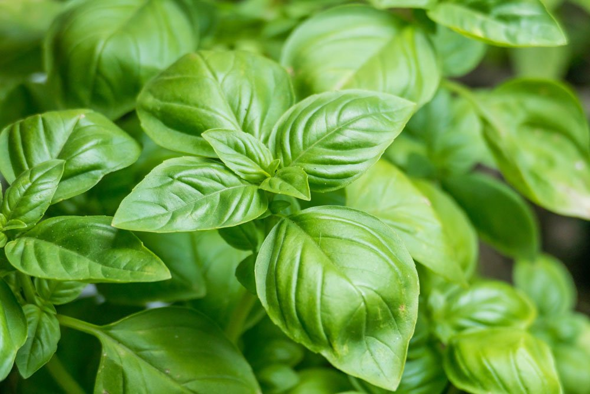
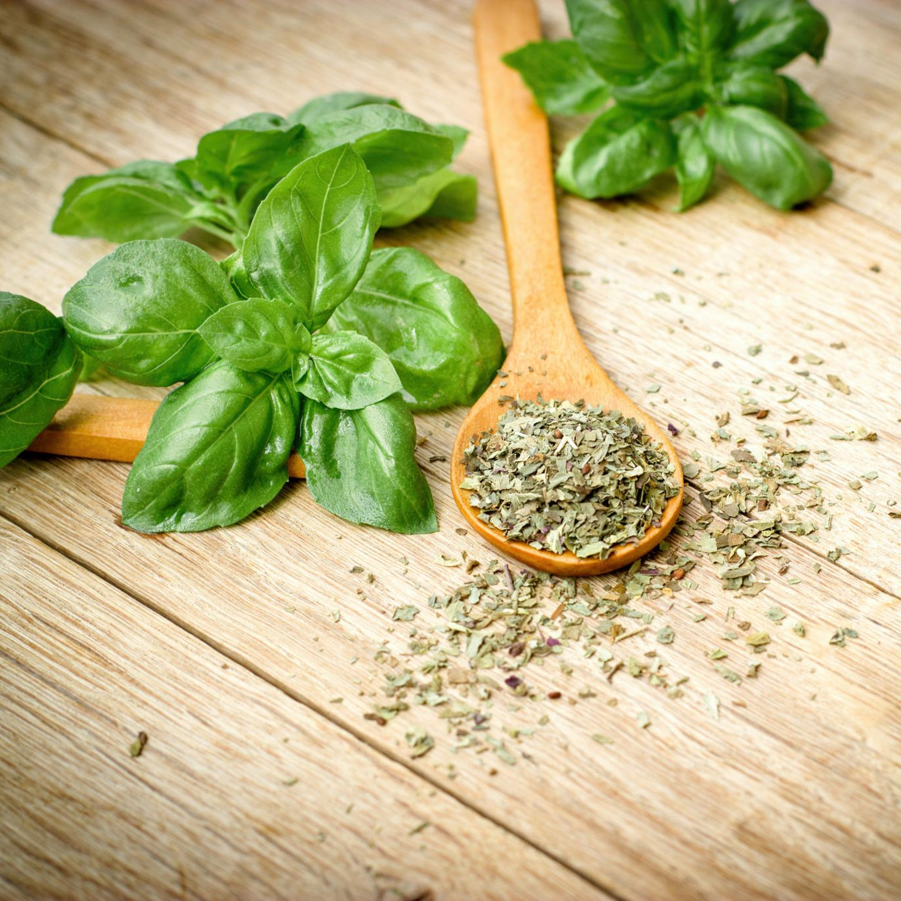

Das Basilikum (Ocimum basilicum), auch Basilie, Basilienkraut oder Königskraut genannt, ist eine Gewürzpflanze aus der gleichnamigen Gattung Basilikum (Ocimum) in der Familie der Lippenblütler.
Die verschiedenen Kulturformen unterscheiden sich in Blattfarbe, Größe, Aroma, Wachstumsart und Ansprüchen. Basilikum wird in den gemäßigten Breiten meist als einjährige Pflanze kultiviert. Es ist eine aufrecht wachsende, einjährige bis ausdauernde krautige Pflanze, die Wuchshöhen von 20 bis 60 Zentimetern erreicht. Alle Pflanzenteile duften aromatisch. Stängel, Blütenhüllblätter und oft die Laubblätter sind behaart (Indument). Die kreuzgegenständigen Laubblätter sind in Blattstiel und Blattspreite gegliedert. Die kurzen Blattstiele weisen eine Länge von 5 bis 20 Millimeter auf. Die einfache Blattspreite ist oft eiförmig mit einer Länge von 1,5 bis 5 Zentimetern sowie einer Breite von 0,8 bis 3,2 Zentimetern. Der Blattrand ist glatt.
Die Blütezeit reicht hauptsächlich von Juni bis September. Der vielblütige ährige Blütenstand enthält auch zwei- bis dreiblütige Zymen. Der Blütenstiel ist 2,5 Millimeter lang. Die zwittrige Blüte ist zygomorph und fünfzählig mit doppelter Blütenhülle. Die fünf Kelchblätter sind glockenförmig verwachsen und weisen die gleiche Farbe wie die Laubblätter auf. Der Kelch ist während des Blühvorgangs (Anthese) 1,5 bis 3 Millimeter lang und vergrößert sich bis zur Fruchtreife auf etwa 9 Millimeter. Die fünf Kronblätter sind zu einer 8 bis 9 Millimeter langen Krone verwachsen. Die Kronröhre weist eine Länge von etwa 3 Millimeter auf. Die breite, mehr oder weniger flache Oberlippe ist vierlappig, etwa 3 Millimeter lang und etwa 4,5 Millimeter breit. Die Unterlippe ist etwa 6 Millimeter groß. Es sind zwei ungleiche Paare von Staubblättern vorhanden, die mit der Krone verwachsen sind, aber untereinander frei sind. Die Staubbeutel öffnen sich mit einem Längsschlitz. Der Fruchtknoten ist oberständig. Der Griffel endet in einer zweilappigen Narbe. Die Frucht ist 1,5 bis 2 Millimeter lang und vom vergrößerten Kelch eingehüllt. Die Chromosomenzahl beträgt 2n = 48.
Da Gehalt und Zusammensetzung an ätherischem Öl variieren, schmeckt Basilikum sortenabhängig leicht verschieden – von intensiv bis mild im Aroma kann es auch eventuell leicht scharf sein. Manche Sorten erinnern v.a. im Geruch an Nelken, Anis oder Zitrone. Basilikum hat einen hohen Gehalt an den Mineralstoffen Kalium, Magnesium und Kalzium, u.a. enthält es Vitamin A und Vitamine der B-Gruppe und liefert dem Körper viele wertvolle Inhaltsstoffe.
| Nährwerte | Werte pro 100g |
|---|---|
| Energie (Kilokalorien) | 41 kcal |
| Energie (Kilojoule) | 172 kJ |
| Fett | 800 mg |
| Kohlenhydrate | 5100 mg |
| Eiweiß (Protein) | 3100 mg |
| Salz | 23 mg |
| Ballaststoffe | 3111 mg |
| Mineralstoffe | 1196 mg |
Die Blätter des Basilikums werden am besten frisch im Ganzen oder grob geschnitten bzw. gezupft verzehrt. In getrockneter Form kann die ganze Pflanze verwendet werden, sie ist jedoch nicht mehr so aromatisch. Frisches Basilikum sollte nicht erhitzt bzw. mitgekocht werden, da es leicht zu unerwünschten Geschmacksveränderungen und Aromaeinbußen kommen kann. Zudem kann sich die Blattfarbe unansehnlich dunkel verändern. Basilikum sollte bereits fertig gekochten Speisen beigemengt bzw. zum Bestreuen und Dekorieren verwendet werden. Das Genovese-Basilikum ist eine typische Zutat vieler mediterraner Speisen, v.a. der italienischen und französischen Küche. Beliebt sind Zubereitungen wie Mozzarella mit Tomaten und Basilikum sowie das Pesto Genovese, eine Gewürz- und Kräuterpaste mit u.a. Rucola, Pinienkernen, Knoblauch, Käse und Olivenöl. Zahlreiche andere Sorten finden sich in der asiatischen Küche z.B. Thailands oder Vietnams.